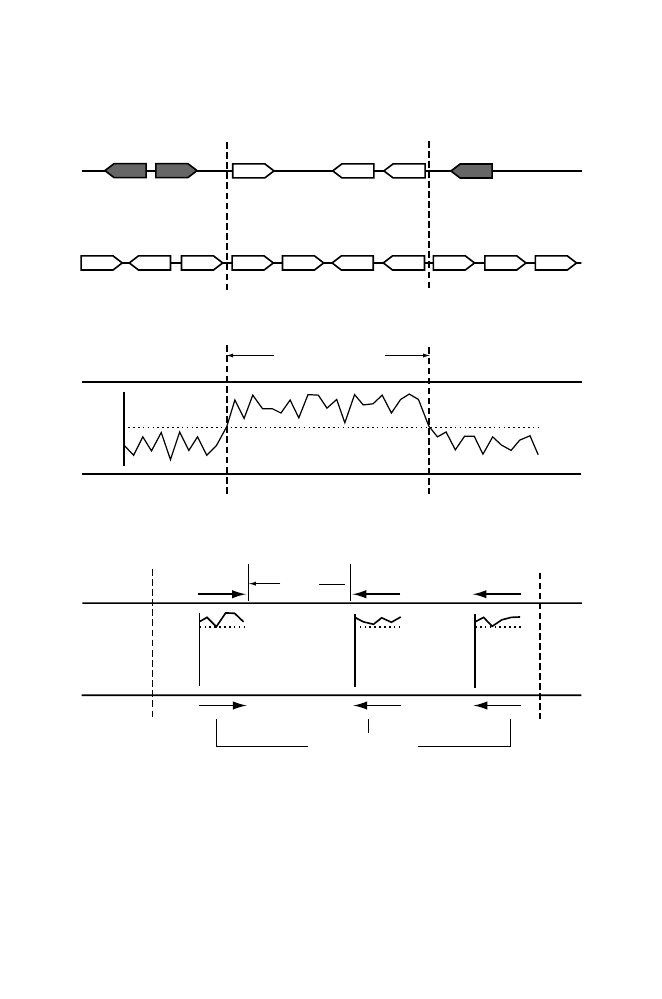

B.
Genome X
Genome Y
% Identity
50
100
0
Length > 1000 bp
4
6
7
1
2
3
4
5
6
7
8
9
10
A.
collinear gene cluster
Genome X
Genome Y
C.
Genome X
Genome Y
% Identity
50
100
0
% Identity
50
100
0
% Identity
50
100
0
average spacing
~8 kb
syntenic anchors
Fig. 14.8.
Criteria for identifying conserved sequence segments in two genomes, X
and Y. Conserved segments are regions between the vertical dashed lines. Panel A:
Conserved segment defined by collinear gene clusters. Shaded genes are unrelated
to unshaded ones. Panel B: Conserved segment identified by alignment with low
identity threshold (dotted horizontal line) and minimum alignment length. Panel C:
Use of anchor sequences having high identity thresholds and identified as reciprocal
“best hits” in genomes X and Y. For the human genome at 88% identity, typical
lengths of syntenic anchors are approximately 200 bp, and typical spacings are about
8 kb (Mural et al., 2002).